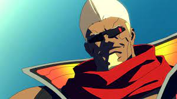

-
David Martinez
Descrição
O jovem David passa por situações bem ruins na Academia Arasaka e acaba indo parar nas ruas de Santo Domingo, com um poderoso implante Sandevistan de uso militar em suas costas e atraindo a atenção das gangues de Night City.
-
Lucy
Descrição
Uma netrunner de Night City, Lucy é introvertida e não fala sobre o seu passado. Ela parece inocente, mas não pensa duas vezes antes de matar alguém que a incomode. Ela faz parte da gangue de mercenários de Maine.
-
Maine
Descrição
O grandalhão Maine era um soldado antes de se tornar um mercenário em Night City. Veterano do crime, Maine sonha com o "grande golpe", mas valoriza a amizade de sua gangue mais do que a glória.